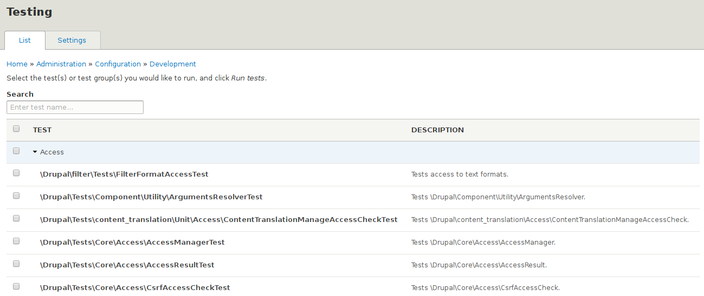
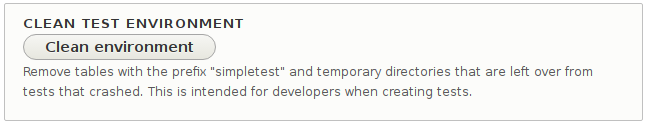

https://github.com/pfrenssen/d8-training
branch: automated-testing


$ cd modules
$ mkdir one_two
$ cd one_two
$ mkdir -p src/Tests
$ mkdir -p tests/src/Kernel
$ mkdir -p tests/src/Unit
$ mkdir -p tests/src/Functional
one_two.info.yml
name: One Two, One Two
description: Test tests
package: Testing
type: module
core: 8.x
src/Tests/WebTest.php
<?php
namespace Drupal\one_two\Tests;
use Drupal\simpletest\WebTestBase;
/**
* Example functional test.
*
* @group one_two
*/
class WebTest extends WebTestBase {
function testDrupalGet() {
$this->drupalGet('user/register');
$this->assertResponse(200, 'The registration page is accessible.');
}
}
function testDrupalGet() {
$this->drupalGet('user/register');
$this->assertResponse(200, 'The registration page is accessible.');
$this->assertField('mail', 'The email field is present.');
$this->assertField('name', 'The name field is present.');
$this->assertField('timezone', 'The timezone field is present.');
$this->assertField('op', 'The submit button is present.');
$this->assertNoField('zlorp', 'The zlorp field is not present.');
}
Take a look at the available asserts.
function testDrupalGet() {
@todo
}
Take a look at the available asserts.
Behat is a BDD framework for PHP
Feature: Product highlights
In order to promote specific products
As a marketing manager
I need to highlight products on the homepage
Scenario: View product highlights
Given I have 3 product highlights
When I visit the frontpage
Then I should see 3 highlighted products
Feature: < title >
In order to < business objective >
As a < user role or persona >
I need to < some action >
Scenario:
Given < a precondition >
When < some action >
And < some other action >
Then < a testable outcome >
But < something else we can test >
Scenario: Show number of likes
Given I am logged in as <user>
When I visit the profile of <friend>
And I click on "Like"
Then I should see <number> likes
Examples:
| user | friend | number |
| Cindy | Cindy | 0 |
| Thomas | Cindy | 1 |
| Thomas | Cindy | 1 |
| Roger | Cindy | 2 |
| Roger | Thomas | 1 |
Scenario:
Given the following users exist:
| username | email |
| Cindy | hypodrake@hotmail.com |
| Thomas | thofpop@ec.europa.eu |
| Roger | sirfrodo@gmail.com |
$ git clone https://github.com/pfrenssen/behat-workshop.git
$ cd behat-workshop
https://getcomposer.org/download/
$ curl -sS https://getcomposer.org/installer | php
$ php composer.phar --version
$ php composer.phar require drupal/drupal-extension
$ ./vendor/bin/behat --version
default:
suites:
default:
contexts:
- FeatureContext
- Drupal\DrupalExtension\Context\DrupalContext
- Drupal\DrupalExtension\Context\DrushContext
- Drupal\DrupalExtension\Context\MessageContext
- Drupal\DrupalExtension\Context\MinkContext
extensions:
Behat\MinkExtension:
goutte: ~
selenium2: ~
base_url: http://mysite.local/
Drupal\DrupalExtension:
blackbox: ~
api_driver: 'drupal'
drupal:
drupal_root: '/var/www/mysite'
http://drupal.org/project/drupalextension
$ git checkout 1-wikipedia
$ cp behat.yml.dist behat.yml
default:
suites:
default:
contexts:
- Drupal\DrupalExtension\Context\MinkContext
extensions:
Behat\MinkExtension:
base-url: 'https://en.wikipedia.org/'
goutte: ~
$ ./vendor/bin/behat --init
features/
features/bootstrap/FeatureContext.php
Scenario: Find the Behat article
Given I am on the homepage
When I enter "Behat" for "search"
And I press "Go"
Then I should see the heading "Behat"
But I see the text "Behat is an ancient town"
When I click "Behat (computer science)"
Then I should see the heading "Behat (computer science)"
And I should see the text "Behat is a BDD framework"
$ git checkout 2-wikipedia
$ ./vendor/bin/behat
Scenario: Find the Behat article
Given I am on the homepage
When I enter "Behat" for "search"
And I press "Go"
Then I should see the heading "Behat"
But I see the text "Behat is an ancient town"
When I click "Behat (computer science)"
Then I should see the heading "Behat (computer science)"
And I should see the text "Behat is a BDD framework"
1 scenario (1 passed)
8 steps (8 passed)
0m8.21s (18.10Mb)
$ ./vendor/bin/behat -di
Given I am not logged in
Given I am logged in as :name
Given a/an :type (content )with the title :title
When I visit :path
When I click :link
When I enter :value for :field
When I press the :button button
Then I should see the text :text
Then I should not see the link :link
More than 100 built-in steps!
Then I should get a :code HTTP response
Then I should see text matching "<regex>"
Then I should see :number "<element>" elements
Given the cache has been cleared
Given I run cron
Given I run drush :command
Given I wait for AJAX to finish
Then I should see the text "Page not found"
Then I should see the welcome message
Then I should see 5 blog posts
And I wait for the autocomplete suggestions to appear
default:
suites:
default:
contexts:
- FeatureContext
- Drupal\DrupalExtension\Context\DrupalContext
- Drupal\DrupalExtension\Context\MinkContext
extensions:
Behat\MinkExtension:
base-url: 'http://mysite.local/'
Drupal\DrupalExtension:
api_driver: 'drupal'
drupal:
drupal_root: '/var/www/mysite'
$ git checkout 3-drupal
$ cp behat.yml.dist behat.yml
$ vim behat.yml
default:
extensions:
Behat\MinkExtension:
base-url: 'http://mysite.local/' <<<<<
Drupal\DrupalExtension:
drupal:
drupal_root: '/var/www/mysite' <<<<<
@api
Scenario: Anonymous user can see the news overview
Given "News article" content:
| title | body |
| Article 1 | The first article. |
| Article 2 | The second article. |
Given I am not logged in
When I visit "news"
Then I should see the heading "News"
And I should see the link "Article 1"
And I should see the text "The first article."
And I should see the link "Article 2"
And I should see the text "The second article."
$ ./vendor/bin/behat
@api
Scenario: Anonymous user can see the news overview
Given "News article" content:
| title | body |
| Article 1 | The first article. |
| Article 2 | The second article. |
Given I am not logged in
...
1 scenario (1 passed)
8 steps (8 passed)
0m0.75s (34.45Mb)
$ git checkout 4-custom
@api
Scenario: Anonymous user can see the news overview
Given "News article" content:
| title | body |
| Article 1 | The first article. |
| Article 2 | The second article. |
| Article 3 | The third article. |
Given I am not logged in
When I visit "news"
Then I should see the heading "News"
And I should see 3 news articles <<<<< CUSTOM STEP
$ ./vendor/bin/behat
1 scenario (1 undefined)
5 steps (4 passed, 1 undefined)
0m5.47s (42.90Mb)
--- FeatureContext has missing steps. Define them with these snippets:
/**
* @Then I should see :arg1 news articles
*/
public function iShouldSeeNewsArticles($arg1)
{
throw new PendingException();
}
$ ./vendor/bin/behat --append-snippets
1 scenario (1 undefined)
5 steps (4 passed, 1 undefined)
0m5.47s (42.90Mb)
`I should see 3 news articles` definition added
/**
* @Then I should see :number news articles
*/
public function assertNewsArticleCount($number) {
$this->assertSession()->elementsCount('css', 'div.news-article', $number);
}
See MinkContext and DrupalContext